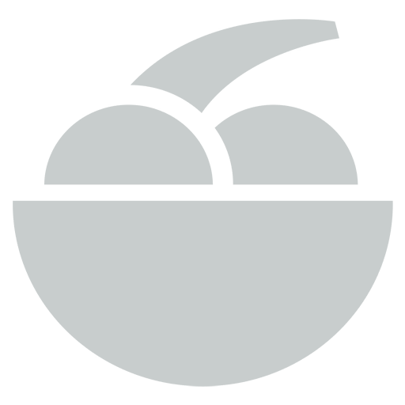

N
0°
Drag to move · scroll to resize
D-pad move · LB/RB pick · LT/RT size
Done
Cancel
HUD Settings
✕
Most of these are also in the pause menu: Settings, Server, HUD.
Save
Radar Tuner
SetMinimapComponentPosition · live
close
Save
Print to F8
Reset
GTA stock